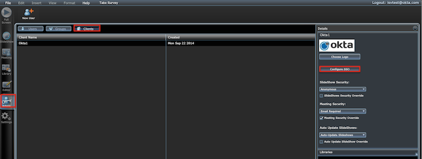
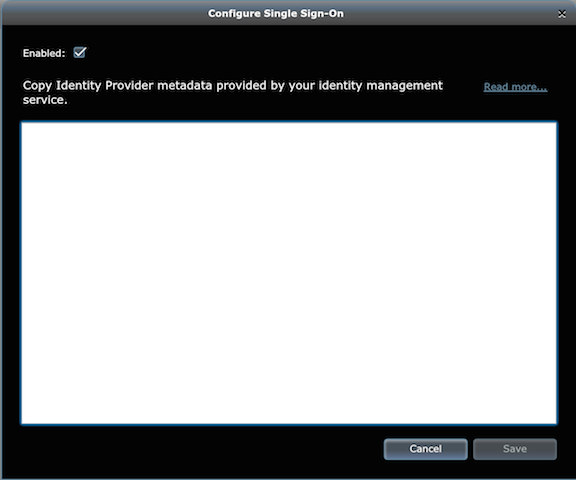

This setup might fail without parameter values that are customized for your organization. Please use the Okta Administrator Dashboard to add an application and view the values that are specific for your organization.
Sign in to CustomShow and navigate to Admin > Client. Select a client, and then select Configure SSO, as shown below.

Check Enabled to turn on Single Sign-on, as shown below.

Copy the following Identity Provider Metadata and paste it into Configure Single Sign-On screen, as shown above.
Sign into the Okta Admin dashboard to generate this value.
Select Save.
Done!
Note: IdP-initiated flow is supported. SP-initiated flow and Just In Time (JIT) provisioning are not supported.